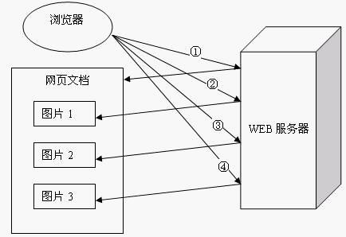
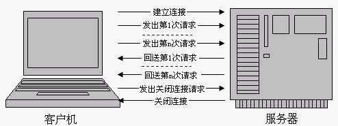

HTTP 1.1与HTTP 1.0的比较
一个WEB站点每天可能要接收到上百万的用户请求，为了提高系统的效率，HTTP 1.0规定浏览器与服务器只保持短暂的连接，浏览器的每次请求都需要与服务器建立一个TCP连接，服务器完成请求处理后立即断开TCP连接，服务器不跟踪每个客户也不记录过去的请求。但是，这也造成了一些性能上的缺陷，例如，一个包含有许多图像的网页文件中并没有包含真正的图像数据内容，而只是指明了这些图像的URL地址，当WEB浏览器访问这个网页文件时，浏览器首先要发出针对该网页文件的请求，当浏览器解析WEB服务器返回的该网页文档中的HTML内容时，发现其中的<img>图像标签后，浏览器将根据<img>标签中的src属性所指定的URL地址再次向服务器发出下载图像数据的请求，如图3.3所示。

图3.3
显 然，访问一个包含有许多图像的网页文件的整个过程包含了多次请求和响应，每次请求和响应都需要建立一个单独的连接，每次连接只是传输一个文档和图像，上一次和下一次请求完全分离。即使图像文件都很小，但是客户端和服务器端每次建立和关闭连接却是一个相对比较费时的过程，并且会严重影响客户机和服务器的性 能。当一个网页文件中包含Applet，JavaScript文件，CSS文件等内容时，也会出现类似上述的情况。
为了克服HTTP 1.0的这个缺陷，HTTP 1.1支持持久连接，在一个TCP连接上可以传送多个HTTP请求和响应，减少了建立和关闭连接的消耗和延迟。一个包含有许多图像的网页文件的多个请求和应答可以在一个连接中传输，但每个单独的网页文件的请求和应答仍然需要使用各自的连接。HTTP 1.1还允许客户端不用等待上一次请求结果返回，就可以发出下一次请求，但服务器端必须按照接收到客户端请求的先后顺序依次回送响应结果，以保证客户端能够区分出每次请求的响应内容，这样也显著地减少了整个下载过程所需要的时间。基于HTTP 1.1协议的客户机与服务器的信息交换过程，如图3.4所示。

图3.4
可见，HTTP 1.1在继承了HTTP 1.0优点的基础上，也克服了HTTP 1.0的性能问题。不仅如此，HTTP 1.1还通过增加更多的请求头和响应头来改进和扩充HTTP 1.0的功能。例如，由于HTTP 1.0不支持Host请求头字段，WEB浏览器无法使用主机头名来明确表示要访问服务器上的哪个WEB站点，这样就无法使用WEB服务器在同一个IP地址和端口号上配置多个虚拟WEB站点。在HTTP 1.1中增加Host请求头字段后，WEB浏览器可以使用主机头名来明确表示要访问服务器上的哪个WEB站点，这才实现了在一台WEB服务器上可以在同一个IP地址和端口号上使用不同的主机名来创建多个虚拟WEB站点。HTTP 1.1的持续连接，也需要增加新的请求头来帮助实现，例如，Connection请求头的值为Keep-Alive时，客户端通知服务器返回本次请求结果后保持连接；Connection请求头的值为close时，客户端通知服务器返回本次请求结果后关闭连接。HTTP 1.1还提供了与身份认证、状态管理和Cache缓存等机制相关的请求头和响应头。
《深入体验Java Web开发内幕——核心基础》
HTTP 协议老的标准是HTTP/1.0，目前最通用的标准是HTTP/1.1。HTTP/1.1是在HTTP/1.0基础上的升级，增加了一些功能，全面兼容 HTTP/1.0。HTTP/1.0不支持文件断点续传，目前的Web服务器绝大多数都采用了HTTP/1.1。
RANGE:bytes是HTTP/1.1新增内容，HTTP/1.0每次传送文件都是从文件头开始，即0字节处开始。RANGE:bytes=XXXX表示要求服务器从文件XXXX字节处开始传送，这就是我们平时所说的断点续传！